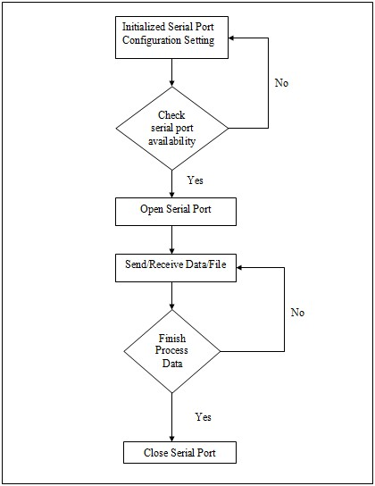

Serial Port Introduction
RS-232
RS-232 is an interface that is suitable for many basic communication tasks between two devices. The communication distance limit around 80 to 130 feet, depending on the bit rate and cable type.
Pins Configuration
PIN # (9-pin) PIN # (25-pin) Signal Source Type Description
1 8 CD DCE Control Carrier detect
2 3 RX DCE Data Receive data
3 2 TX DTE Data Transmit data
4 20 DTR DTE Control Data terminal ready
5 7 SG - - Signal ground
6 6 DSR DCE Control Data set ready
7 4 RTS DTE Control Request to send
8 5 CTS DCE Control Clear to send
9 22 RI DCE control Ring indicator
Programming Sequence Flow Chart
